Manufakturprogramm
Vom Teller bis zur Schüssel, von der Tasse bis zum Krug hin zu Salz-, Pfeffer-, Milch- und Zuckergefäßen – unsere Geschirr-Serie umfasst alle Bestandteile eines Speisegeschirrs.
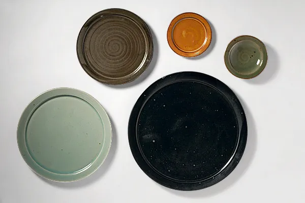

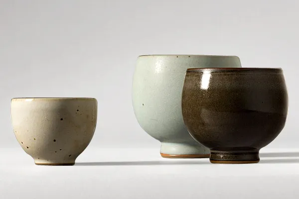
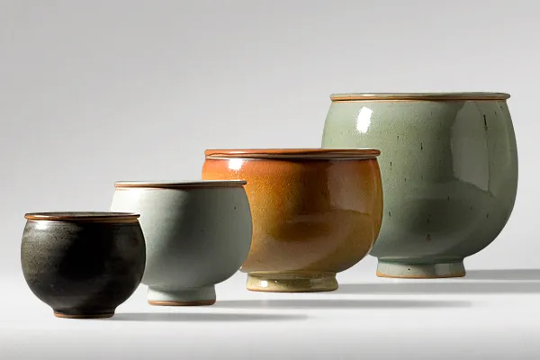
- Teller
- Krüge und Kannen
- Becher und Tassen
- Töpfe und Dosen
Jedes Stück muss gut zu drehen sein und auch zu benutzen. Alle Teile eines Geschirrs, gleich welcher Farbe, sollten miteinander kombinierbar sein.

Unter Rückbesinnung auf die formalen Grundprinzipien des Bauhauses hat Young-Jae Lee mit Hildegard Eggemann, Michael Schmandt und Claudia Neumann die charakteristische Formensprache des Manufakturprogramms entwickelt.
Zunächst wurden die 25 Grundelemente eines Geschirrs entworfen: Teller, Schalen, Krüge. In monatelangen Experimenten entstand die sechstonige Farbskala, von Schattierungen des Jadegrün über ein gebrochenes Weiß bis zu Rostbraun.
Geschirr
Alle Teile eines Geschirrs, gleich welcher Farbe, lassen sich miteinander kombinieren – einzeln oder im Set.
Teller
- BrotschmiertellerØ 22,5 cmNr. 15
- BrottellerØ 13 cmNr. 14
- Unterteller2,8 × 12,5 cmNr. 13
- Essteller2,8 × 28 cmNr. 16
- PlatztellerØ 35 cmNr. 17
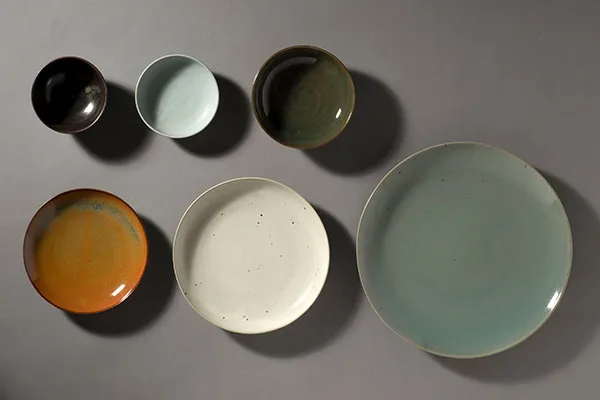
Neue Serie
- Dessertschale, hoch6,0 × Ø 13,5 cmNr. 50
- Dessertschale, flach4,0 × Ø 15 cmNr. 51
- Suppenteller5,5 × Ø 18,5 cmNr. 49
- Vorspeisenteller nicht mehr im Programm3,5 × Ø 22,5 cmNr. 52
- Essteller3,5 × Ø 28,5 cmNr. 53
- Großer Anrichteteller4,0 × Ø 38,5 cmNr. 54
Viereckteller
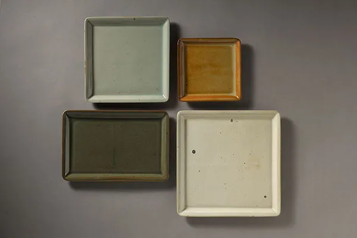
- Viereckteller, groß25,5 × 25,5 cmNr. 18
- Viereckteller, mittel21,0 × 21,0 cmNr. 19
- Viereckteller, klein16,0 × 16,0 cmNr. 20
- Rechteckteller26,0 × 17,0 cmNr. 21
Die Viereckteller werden aus Platten über Gipsmodellen geformt – alle anderen Stücke entstehen auf der Töpferscheibe.
Schalen und Schüsseln

- Salatschüssel13 × 34 cmNr. 1
- Salatschüssel, medium11 × 28 cmNr. 2
- Koreanische Suppenschale8,5 × 23 cmNr. 3
- KugeldoseØ 6–11 cm

- Salatschüssel, flach, mittel6,5 × 26 cmNr. 48a
- Salatschüssel, flach6 × 30 cmNr. 48

- Müslischale, spitz8 × 12 cmNr. 6
- Müslischale, spitz, klein6 × 10 cmNr. 6a
- Müslischale, spitz, groß9,5 × 16 cmNr. 7
- Müslischale, spitz, flach8,45 × 21 cmNr. 8
- Schüssel, spitz12,5 × 22 cmNr. 9
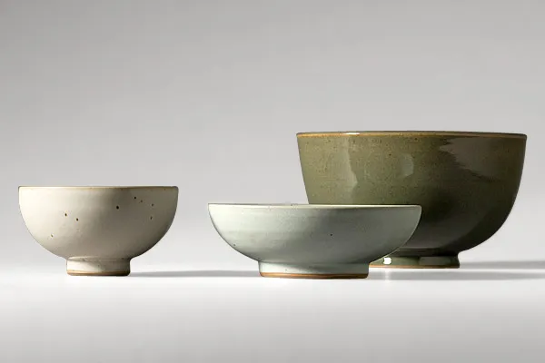
- Müslischale, breit7,5 × 13,5 cmNr. 11
- Spaghettiteller6 × 19 cmNr. 10
- Schüssel, breit nicht mehr im Programm12,5 × 21,5 cmNr. 12

Alle Stücke werden in unserer Werkstatt in Handarbeit gefertigt. Sie sind einzeln oder im Set zu erwerben.
Becher und Tassen
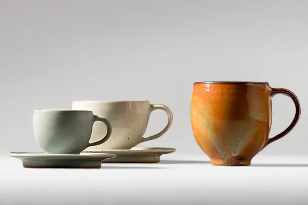
- Espressotasse nicht mehr im Programm5,5 × 6 cmNr. 33
- Espressountertasse nicht mehr im ProgrammØ 11,5 cmNr. 34
- Cappuccinotasse nicht mehr im Programm7 × 9 cmNr. 31
- Cappuccinountertasse nicht mehr im ProgrammØ 15,5 cmNr. 32
- Kaffeetasse9 × 8,5 cmNr. 30
- Teebecher5,5 × 7 cmNr. 23
- Teebecher, groß9,5 × 9,5 cmNr. 22
- Trinkbecher, klein8 × 8 cmNr. 24
Töpfe und Dosen
- Deckeldose8 × 8,5 cmNr. 39
- Deckeltopf, klein10,5 × 12 cmNr. 40
- Deckeltopf, mittel13 × 16 cmNr. 40a
- Deckeltopf, groß19 × 18 cmNr. 41
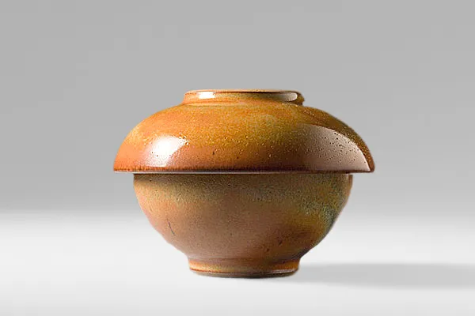
- Koreanische DoseH 8,5 × 12,5 cmNr. 42
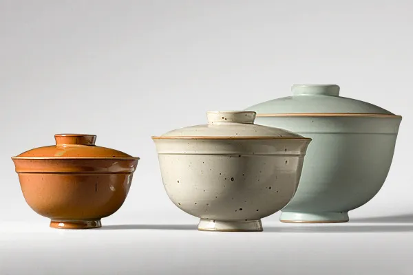
- Suppentopf11 × 20 cmNr. 43
- Suppentopf, extra klein ohne AbbildungNr. 43a
- Suppentopf, mittel14 × 24 cmNr. 44
- Suppentopf, groß18 × 29,5 cmNr. 45
Flaschen, Krüge, Kannen
- Krug, 2 Liter19 × 10 cmNr. 25
- Krug, 1 Liter16 × 8,5 cmNr. 26
- Krug, 0,75 Liter ohne AbbildungNr. 26a
- Krug, 0,5 Liter10,5 × 8,5 cmNr. 27
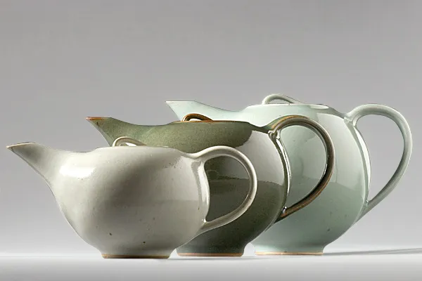
- Teekanne, extraklein10 cmNr. 35a
- Teekanne, klein12 cmNr. 35
- Teekanne, groß15 cmNr. 36
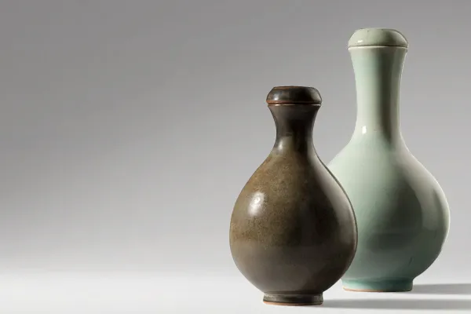
- Flasche, klein13 cmNr. 37
- Flasche, groß24 cmNr. 38
Weitere Stücke
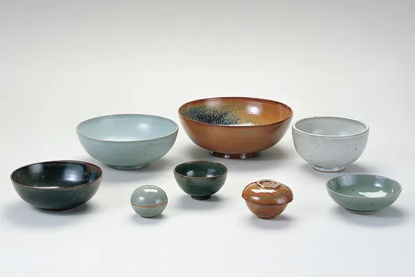
- Koreanische Suppenschale8,5 × 23 cmNr. 3
- Salatschüssel, medium11 × 28 cmNr. 2
- Salatschüssel13 × 34 cmNr. 1
- KugeldoseØ 6–11 cmNr. 2020
- Müslischale, breit7,5 × 13,5 cmNr. 11
- Koreanische Dose8,5 × 12,5 cmNr. 42
- Spaghettiteller6 × 19 cmNr. 10
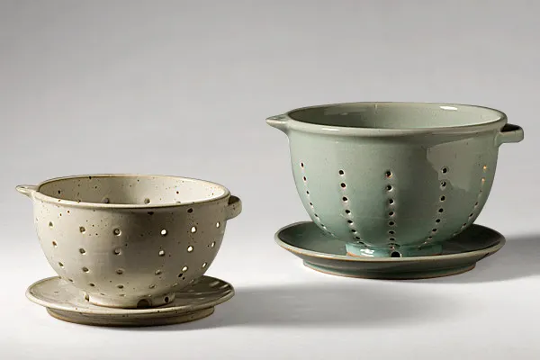
- Sieb, klein10 × 17,5 cmNr. 5
- Sieb, groß13,5 × 20,5 cmNr. 4
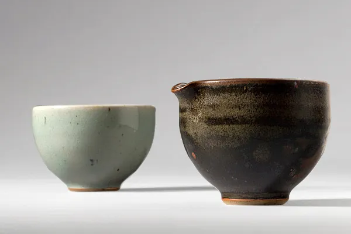
- Milch5,5 × 7 cmNr. 28
- Zucker5 × 7,5 cmNr. 29
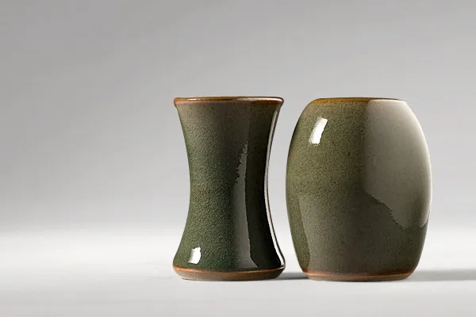
- Pfefferstreuer nicht mehr im Programm7 × 4 cmNr. 47
- Salzstreuer nicht mehr im Programm7 × 4 cmNr. 46
Edition
In unserer Edition sind weitere ergänzende Geschirrstücke erhältlich, wie zum Beispiel Sushi- oder Plattenteller, sowie Pflanzengefäße und Vasen. Sie unterscheiden sich in der Farbgebung von unserem Geschirr.
Vasen
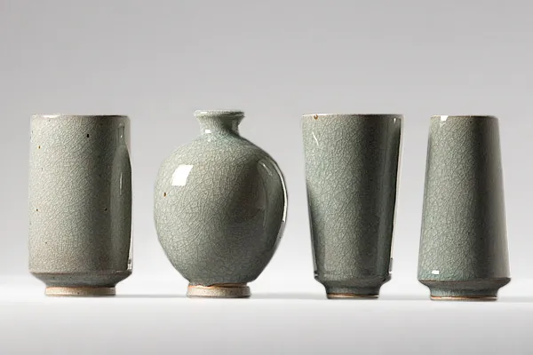
- Zylindervase, kleinH 14 cm
- Kugelvase, kleinH ca. 14 cm
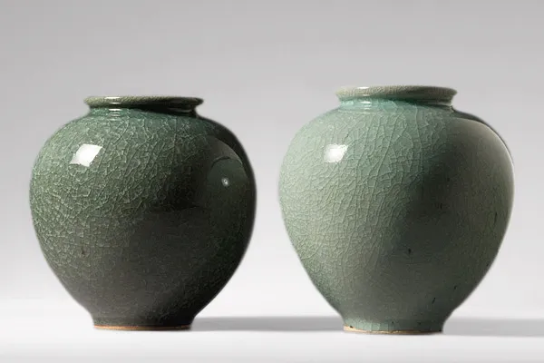
- KugelvasenH ca. 20 cm
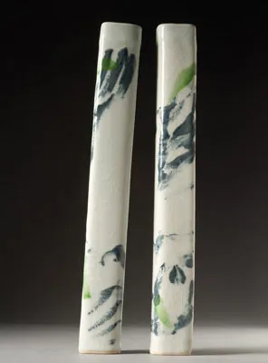
- WandvaseH 39 cm
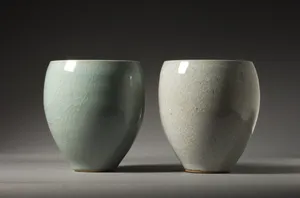
- TulpenvaseH 20,0 cm, Ø 16,0 cm
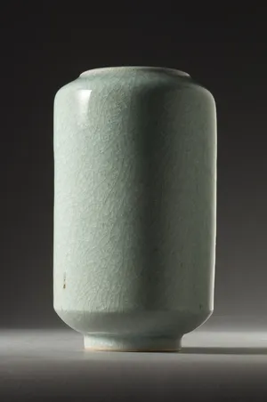
- Zylindervase, großH 27,0 cm, Ø 16,0 cm
Plattenteller
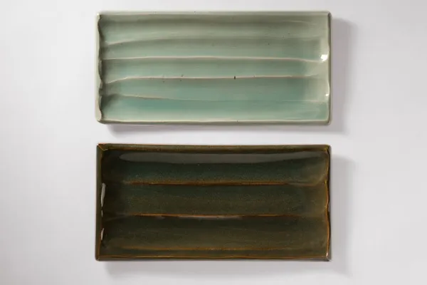
- Plattenteller21 × 42 cm
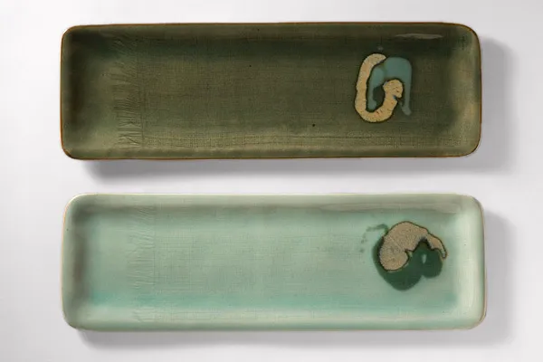
- Plattenteller, lang16,5 × 42 cm
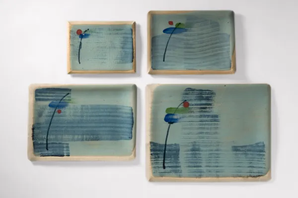
- Plattenteller, klein14,5 × 17 cm
- Plattenteller, mittel18 × 24 cm
- Plattenteller, groß23 × 31 cm
- Plattenteller, extragroß27,5 × 35 cm
Pflanzgefäße
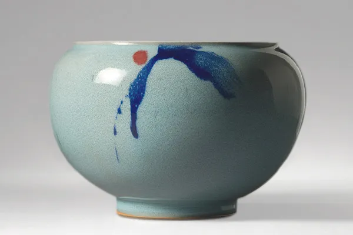
- Pflanzenübertopf, kleinH 15,5 cm, Ø 17,0 cm
- Pflanzenübertopf, mittelH 19,5 cm, Ø 18,5 cm
- Pflanzenübertopf, großH 23,5 cm, Ø 23,5 cm
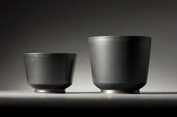
- Pflanzenübertopf, zylindrisch, kleinH 15,0 cm, Ø 15,5 cm
- Pflanzenübertopf, zylindrisch, mittelH 18,0 cm, Ø 19,0 cm
- Pflanzenübertopf, zylindrisch, großH 22,0 cm, Ø 23,0 cm
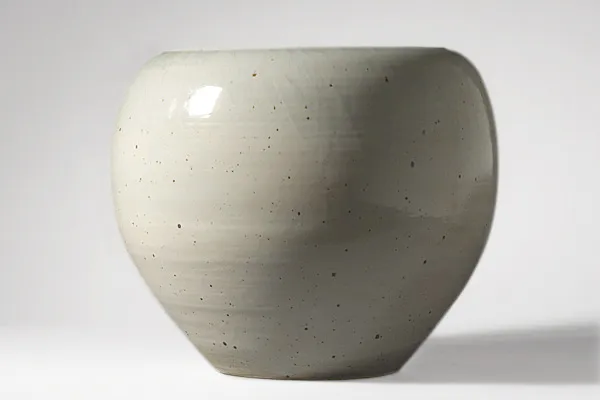
- Pflanzgefäß, weitH 43 cm, D 50 cm
Schalen und Dosen
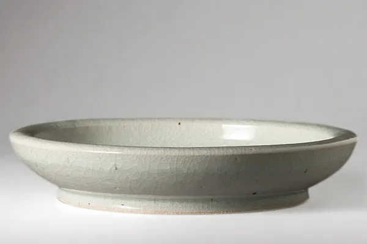
- Große SchaleH 6,5 cm, Ø 36,5 cm

- Große SchaleH 6,5 cm, Ø 36,5 cm
Kugeldose
- KugeldoseØ 6–11 cm
Abgebildet unter Schalen und Schüsseln.
Sechs Töne für das Geschirr.
Die Farben der Edition unterscheiden sich vom Geschirr und können je nach Brand unterschiedlich ausfallen. Wählen Sie eine Glasurprobe.
weiß
Geschirr
Edition
Keiner Mode, keinem Zeitgeist unterworfen.
Die Grundzüge des Manufakturprogramms haben sich bis heute nicht verändert. Mit der Edition wurde es um zusätzliche Stücke erweitert, darunter Vasen, Pflanzengefäße und Dosen.
- Masse
- Westerwälder Steinzeugmasse, auf der Töpferscheibe gedreht. Die Viereckteller werden aus Platten über Gipsmodellen geformt.
- 950 °C
- Schrühbrand im Elektroofen.
- 1300 °C
- Glasurbrand im Gasofen in reduzierender Atmosphäre – für matte bis glänzende Oberflächen und aufeinander abgestimmte Farben.
- Umwelt
- Es werden ausschließlich umweltschonende Materialien und Fertigungsverfahren angewendet.
- Gebrauch
- Alle Stücke sind spülmaschinenfest.
Bei Interesse senden wir Ihnen gerne weitere Informationen oder ein Angebot zu.
Nennen Sie uns gern das Geschirr oder die Edition, die Sie interessiert. Für eine Bestellung gibt es Anfrageformulare: Geschirr (PDF) Edition (PDF)